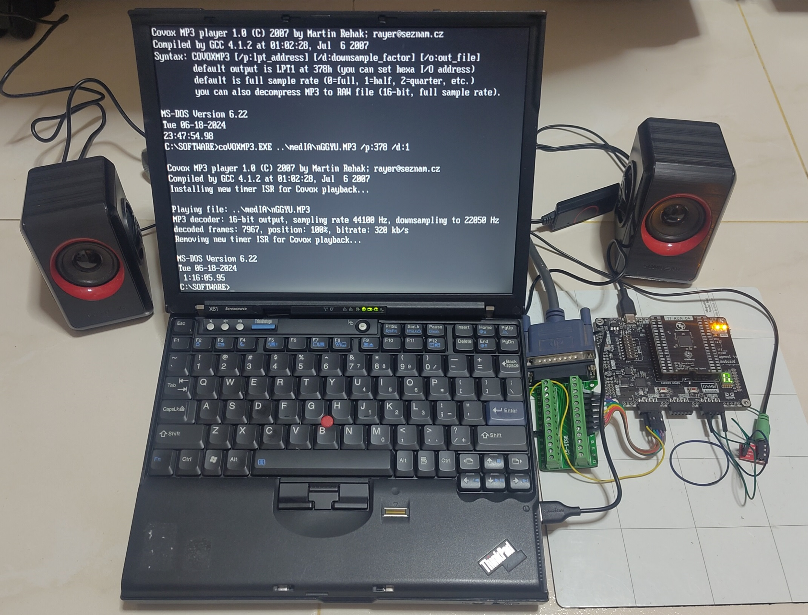

When one thinks of designing an Application-specific Integrated Circuit (ASIC) chip, one would typically imagine a very high production cost, lack of access to tools and individuals can’t really do this unless you work in a company or academia.
Thanks to Tiny Tapeout, these barriers are broken down and I managed to have a chip that contains my own design. I sent in a very simple project but it is still my submission no less. I went through the entire submission procedure including writing a small testbench and preparing my project for submission through the very nicely documented process from Tiny Tapeout.
In this post, I will share my experience in development and demonstrating my design.
Background of Tiny Tapeout
Tiny Tapeout is a service that makes manufacturing ASICs (chips) affordable and accessible to students and makers. We leverage an open source ASIC toolchain, and build a community of open silicon enthusiasts who collaborate and share their digital design projects.
Tiny Tapeout was started by Matt Venn in 2022. Since that time, several batches (or shuttles as they call it) of chips have been executed. Tiny Tapeout collaborates with EFabless platform to aggregate multiple designs together into one shuttle in order to spread out and thus lower the cost per design.
I took part in Tiny Tapeout 4 (TT04). It was submitted to Efabless 2309C chipIgnite shuttle using the open source Skywater 130nm Process Design Kit (PDK). The PDK contains the specification, design rules and standard libraries used by the foundry.
Submission closed in Sept 2023 and I just received the chip and carrier board last week. So an approximately 9-month wait from submission to receiving the result.
TT04 had 143 projects from people around the world. After fabrication, the desired design is then dynamically selected through a multiplexer.
Background of Covox Speech Thing and PWM
The objective of my project is to mimic the capabilities of the 1987 Covox Speech Thing (CST), a simple Digital-to-analog converter (DAC) that gets digital signals from a Parallel port then outputs an analog audio signal. Parallel ports were a common expansion port available on vintage PCs before the days of USB.
I was already familiar with the CST as I worked on making a PCB for it and creating a Linux software player for it in 2017.
The basic schematic of the CST showing an R-2R resistor ladder that is used in the DAC process.
PCB of my CST clone in 2017.
Tiny Tapeout 4 could not generate analog signals. (The later runs today support analog outputs.)
The alternative to mimic an analog output through digital means is to use Pulse Width Modulation (PWM). PWM varies the duty cycle, basically the proportion of time a pin is high or low so the overall value will be averaged out to a certain analog value.
Demo setup of fabricated chip
To demonstrate the PWM function implemented in this ASIC, I have 2 demo setups. Audio is recorded using the GoPro’s onboard microphone.
Linux with Expresscard Parallel Port adapter
This setup is for a “more modern” machine that does not have a native parallel port.
The machine is a 2012 Thinkpad T430 running Kubuntu 22.04 LTS.
I used a Startech ExpressCard parallel port adapter. The parallel port pins are connected to the ASIC inputs. The ASIC output is connected to a 3.5mm audio jack adapter which is then sent to the speakers.
The first few seconds of the video is to configure the ASIC to use my design with a webapp called Tiny Tapeout Commander over Web Serial through the onboard RP2040 microcontroller. The RP2040 also sets the clock frequency supplied to the ASIC.
The clock (or PWM) frequency to use should be high enough to ensure sufficient audio fidelity. At up to 48kHz audio sample rate and 8-bit audio, 48000 * 2^8 roughly equals 12Mhz. I used 10Mhz in this video for default convenience as it sounded good enough to me.
Once the ASIC is configured, I launch a software player to send audio data to the parallel port. This Linux-based player dubbed Covox Music Player was written by yours truly in 2017.
DOS with native parallel port
To verify if the design actually works as expected in a vintage environment, I will need a DOS machine.
I used a 2007 Thinkpad X61 running DOS 6.22. It has a native LPT1 (0x378) parallel port through the X6 Ultrabase Docking Station.
More details of my Thinkpad X61’s configuration is documented here.
The DOS player is Covox MP3 player written by Martin Rehak.
This demo Crystal Dream by Triton supports a parallel port DAC like the Covox Speech Thing.
Development Process using Verilog
Verilog is a Hardware Description Language (HDL) used in programming FPGAs as well as ASIC design. It is therefore used by Tiny Tapeout for project submissions too.
Tiny Tapeout has provided generous and detailed documentation on their website on how to get started using their user-friendly tools. It was much simpler than the industry-standard tools I used in my university’s chip design course.
The repository I used for the submission can be found https://github.com/yeokm1/tt4-pwm-audio.
Below is the process I did using TT04. Note that specifics may/likely change for future shuttles but the general flow should still be similar.
1: Ideation
The first step is deciding what to do based on the constraints. At the time of TT04, these were the IO pins that are available for each design.
module tt_um_yeokm1_pwm_audio (
input wire [7:0] ui_in, // Dedicated inputs
output wire [7:0] uo_out, // Dedicated outputs
input wire [7:0] uio_in, // IOs: Input path
output wire [7:0] uio_out, // IOs: Output path
output wire [7:0] uio_oe, // IOs: Enable path (active high: 0=input, 1=output)
input wire ena, // will go high when the design is enabled
input wire clk, // clock
input wire rst_n // reset_n - low to reset
);
- Clock is provided by RP2040 and can go up to 50Mhz
- 3.3V logic level digital pins only (not 5V tolerant)
- Tile area is 160x100um. More tiles can be purchased at additional cost.
I opted to go with a simple Covox Speech Thing clone using PWM as I was fairly close to the submission deadline when I first heard of Tiny Tapeout. My main objective then was to go through the design process to get a simple project working rather than trying a more complicated design and not finishing.
2. Forking the template
Tiny Tapeout provides a submission template to ensure all submissions are in the correct format. At the time of TT04, this was the template repository.
The repository also contains configuration for Github Actions to automate certain workflows that will be useful later.
3. Writing the testbench
Test-driven development is a very common approach used in the software world. For this case, I believe this approach is all the more important as the cost of making a mistake is very high.
Testing is done using the cocotb framework, a Python-based cosimulation tool for HDL code.
The following is a short snippet of the relevant sections of my testbench:
PERIOD_CYCLES = 256
...
@cocotb.test()
async def test_tt_um_yeokm1_pwm_audio(dut):
...
for i in range(PERIOD_CYCLES):
dut.ui_in.value = i
for j in range(PERIOD_CYCLES):
await ClockCycles(dut.clk, 1)
# Verify correct ratio of Ton and Toff for PWM
if j < i:
assert str(dut.uo_out.value[7]) == "1"
else:
assert str(dut.uo_out.value[7]) == "0"
...
dut refers to the verilog module that we will write that will be tested.
In the test, the outer for-loop iterates through all the possible 256 (8-bit) values supplied to the input. The inner for-loop checks the appropriate ratio between the ON time and OFF time at every clock cycle.
4. Run the test github action
The testbench can be executed in provided Github Actions. The action sets up a Linux virtual machine in the background with all required dependencies with no need to setup the toolchain manually.
The first 2 are test-related Github actions. The third docs action is listed for completeness.
| Github Action | Jobs | Objective |
|---|---|---|
| test | test | Pre-synthesis test. Run the testbench on the simulated HDL design. |
| gds | gds | HDL module is converted to logic gates and laid out. |
| gl_test | Post-synthesis test. Testbench is run on gate level. | |
| viewer | Design can be optionally viewed | |
| docs | docs | Generates the design datasheet from info.yaml |
Test Action
If everything passes, the action will show green otherwise we will get an error here.
GDS Action
The GDS action generates the layout in a Graphic Design System (GDS) format which can be sent for fabrication. Post-synthesis test is conducted here and Github will inform us if it succeeds.
A 3D-render will also be generated to show the gate and wiring layout in the context of a tile.
5. Writing the code
Here is a snippet of the code that contains the relevant logic section.
module tt_um_yeokm1_pwm_audio #() (
input wire [7:0] ui_in, // Dedicated inputs
output wire [7:0] uo_out, // Dedicated outputs
input wire [7:0] uio_in, // IOs: Input path
output wire [7:0] uio_out, // IOs: Output path
output wire [7:0] uio_oe, // IOs: Enable path (active high: 0=input, 1=output)
input wire ena, // will go high when the design is enabled
input wire clk, // clock
input wire rst_n // reset_n - low to reset
);
reg [7:0] pwm_cnt;
always @(posedge clk) begin
if(rst_n == 0) begin
pwm_cnt <= 0;
end else if (ena) begin
pwm_cnt <= pwm_cnt + 1;
end
end
// Check rst_n and ena are activated first
assign uo_out[0] = rst_n && ena && (ui_in > pwm_cnt);
endmodule
We have a register pwm_cnt that tracks which part of the PWM period we are in right now.
On every positive clock edge, we first check if the active-low reset is low, if so we reset pwm_cnt. Otherwise, it is incremented. If it reaches the maximum value, it will go back to 0. pwm_cnt is an 8-bit register as the input audio and PWM-period are 8 bits wide.
The active and inactive time is decided based on these conditions:
- State of reset
- My design is enabled
- The current 8-bit audio value is above/below the current point of the PWM period.
Even with this simple code, I was stuck for a very long time as it passed the Pre-synthesis functional HDL check but failed the Gate-level Post-synthesis test which stated the output was undefined with x output.
The answer was actually documented online all this while which I didn’t read:
Most FPGAs allow initial statements, and flops are often initialised to zero. This is not the case with ASICs, where flops will have a random initial value at power on. Initial statements are not allowed, so you must use an explicit reset.
If one only uses FPGAs before this, it would be easy to make this mistake.
The solution ended being as simple as this:
if(rst_n == 0) begin
pwm_cnt <= 0;
end
On reset, explicitly set the pwm_cnt register to 0.
6. Test on FPGA
Although not strictly required, it is recommended that the design be tested on an FPGA as a sanity check.
I tested the HDL module on a Mimas A7 Artix 7 FPGA board with a Vivado project.
7. Chip documentation
Most chips sold commercially almost always come with a datasheet. Tiny Tapeout encourages this good habit as well so others can use the design. Information such as but not limited to the following are required to be documented in a info.yaml file:
- Author
- Project Title
- Description
- How it works?
- How to test this project?
- Description of inputs and outputs
- External Hardware required
The docs Action has to be run to scrape the data from info.yaml to generate a chip datasheet.
8. Submission
To submit the design, the project should pass all 3 Github Actions. A pull request has to be made to merge the design to the shuttle’s relevant repository which in the case of Tiny Tapeout 4 was https://github.com/TinyTapeout/tinytapeout-04.
Final remarks
It is extremely satisfying to have my design baked into physical hardware and working as expected. No flashing of microcontroller firmware, computer software or FPGA bitstream. Just fixed electronic circuits doing your bidding.
Before Tiny Tapeout and its associated ecosystem, designing and fabricating a chip would not have been feasible as an individual unless you work for a chip-design company or university. Development tools are extremely expensive and taping out would cost 6 to 7 figures at the minimum.
I took an Integrated Digital Design course in university in my currently-ongoing masters degree using more industry-standard tools. I had to sign an NDA in the course to use that. That tool while certainly powerful was nowhere near as user friendly as what Tiny Tapeout offers for the entry-level person. Due to NDAs and access to this software only through remote school servers, information on how to use these tools in the wider internet is relatively limited. And I certainly did not get my design on a chip in the end, everything was done purely through simulation.
Tiny Tapeout is akin to an Arduino for chip design. It abstracts away the distracting messy configuration aspects while still providing sufficient learning opportunity into the chip design process. Everything at relatively affordable 3-figure rates that is still palatable at the individual level. I ran into issues and the people in the Discord community was quick to help. And you get the chip in the end!
I have certainly gained a better appreciation of the chip design process. It’s unlikely I would switch into chip design at this point in my career but I can totally forsee that it might encourage a new generation of people interested in this career or at least pick this up as a hobby.
Perhaps one day, submitting a GDS file to a fab will seem just as ordinary as sending Gerbers to a PCB shop is today.
Embedded below is the presentation I gave at Hackware v8.3 meetup.


{kind=link}
{kind=link}
{kind=link}
{kind=link}
{kind=link}
{kind=link}
{kind=link}
{kind=link}
{kind=link}
{kind=link}
{kind=link}